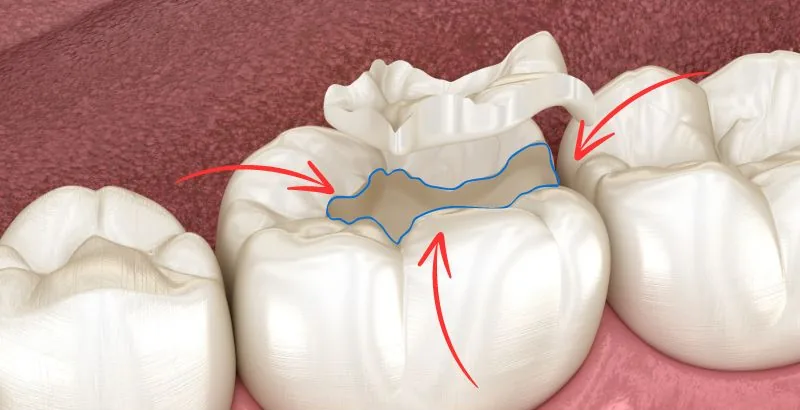

When faced with the challenge of treating cavities, patients are often presented with several options for restoring their teeth. Among the most common solutions are inlays, onlays, and crowns. Deciding between inlays and onlays vs. crowns can sometimes feel overwhelming, especially when patients are unsure which option will best suit their needs. Each of these treatments offers unique benefits depending on the severity of the tooth damage and the desired outcome.
With modern advancements in dental care, inlays and onlays are increasingly favoured for their ability to preserve more of the natural tooth structure compared to crowns, which cover the entire tooth. While crowns provide a complete protective cap, inlays and onlays offer a more conservative approach by targeting specific areas of the tooth that need restoration. Both methods are durable and long-lasting, but understanding the difference between inlays and onlays vs. crowns is key to making an informed decision about your dental health.
In this article, we will explore the distinctions between these treatments and guide you through the process of choosing the best option for your situation. Whether you're looking to protect a tooth with minimal damage or require more extensive restoration, knowing the strengths of inlays and onlays vs. crowns will help you feel confident in your treatment choice.
What is the difference between inlays, onlays and crowns?
When it comes to restoring damaged teeth, modern dentistry offers a range of effective solutions. Among these, inlays and onlays vs crowns are commonly used treatments designed to address different levels of tooth decay or structural damage. Each option varies in terms of how much of the tooth is covered and preserved, as well as the extent of protection they provide. Understanding the differences between these treatments is essential for making an informed choice about which is right for your situation. In the following sections, we will explore how inlays, onlays, vs crowns differ in their approach to dental restoration.
Inlay

An inlay is a type of dental restoration used to repair damage or decay within the cusps of a tooth. It is a custom-made filling, crafted in a dental lab, and is typically used to treat cavities or damage that is too large for a regular filling but not severe enough to require a crown. Inlays help restore the tooth's health and functionality by fitting snugly into the damaged area, offering a durable and aesthetically pleasing solution for medium to large-sized cavities or structural issues.
How Is Inlay Treatment Done?
Before placing an inlay, the affected tooth area must be properly treated to ensure it is clean and free of decay. The dentist begins by removing any decayed or damaged tissue and thoroughly cleaning the area. Once the tooth is prepared, the dentist takes precise measurements or an impression of the cavity. These measurements are then sent to a dental laboratory, where the inlay is custom-made to fit the exact dimensions of the prepared tooth. The inlay is typically crafted from composite, ceramic, or other durable materials, and its shape and colour are tailored to match the natural look of the patient's teeth.
Once the inlay is ready, the dentist carefully places it into the prepared cavity, ensuring a perfect fit. This process is usually performed under local anaesthesia to keep the patient comfortable. Inlays are often preferred over traditional amalgam fillings (commonly known as silver fillings) due to their aesthetic advantages and their ability to preserve more of the natural tooth structure. Because inlays are positioned within the chewing surface of the tooth, they closely resemble the appearance of a natural tooth and help strengthen the tooth, making it more durable. It is always recommended to consult a dentist to determine the best course of treatment based on your specific dental needs.
Onlay

An onlay is a type of dental restoration used to repair and restore the structure and function of a damaged or decayed tooth. Similar to a filling, an onlay is placed on or within the tooth, but it covers a larger area, including one or more of the tooth's cusps. Onlays are designed to reshape and protect the affected part of the tooth, offering a durable solution for preserving the tooth's natural integrity while improving its overall functionality. This technique is often used when the damage is too extensive for a regular filling but does not require a full crown.
How Is Onlay Treatment Done?
To place an onlay, the damaged or decayed tooth must first be properly prepared. The dentist begins by removing any decayed tissue and thoroughly cleaning the affected area. Once the tooth is prepared, precise measurements or an impression of the area are taken. These measurements are then sent to a dental laboratory where the onlay is custom-made with great attention to detail, typically from composite, ceramic, or similar materials. The onlay is crafted to fit perfectly and match the natural shape and colour of the patient's teeth.
Once the onlay is ready, the dentist carefully positions it on the prepared tooth, ensuring a seamless fit. Local anaesthesia is often used during this procedure to keep the patient comfortable. Onlays are often chosen over traditional silver fillings, as they provide a more aesthetic and natural-looking result. They not only improve the tooth's appearance but also help preserve the remaining healthy tooth structure and increase the tooth's strength. Since onlays cover the chewing surface, they closely resemble natural teeth and provide long-lasting durability. Consulting a dentist is essential for determining the best treatment option for your dental needs.
Crown

A dental crown is a protective cap that covers a damaged, decayed, or weakened tooth, restoring its shape, size, and function. It is designed to fit over the entire visible part of the tooth above the gum line, offering both structural support and aesthetic improvement. Crowns are commonly used in cases where a tooth is too damaged for a filling, such as after a root canal or to cover a dental implant. They can be crafted from a range of materials, including metal, resin, or porcelain, depending on the patient's needs and preferences.
With proper care and maintenance, crowns can last between five and 15 years, providing a strong and reliable solution to protect and enhance the appearance of damaged teeth. Not only do crowns restore function, but they also help maintain the natural look of your smile, blending seamlessly with the surrounding teeth.
How Is Crown Treatment Done?
Before dental crown begins, the decayed or damaged tooth must be properly prepared. The dentist carefully removes any weakened or decayed areas and shapes the remaining tooth. Once prepared, an impression of the tooth is taken to create an accurate model. This model is sent to a lab where the crown is crafted with great precision, ensuring it fits perfectly to the patient's tooth and matches the surrounding teeth. Crowns are typically made from materials such as metal, ceramic, or porcelain, each chosen based on their durability and aesthetic qualities.
Once the crown is ready, the dentist carefully places it over the patient's tooth, ensuring a secure fit. Local anaesthesia is usually administered to ensure the patient's comfort during the procedure. Crowns cover the entire tooth, providing both a natural appearance and functional support. In addition to improving the tooth's strength, crowns help preserve the remaining healthy tooth structure. With their natural look and longer lifespan, crowns offer a more durable and effective solution compared to traditional fillings. Dentists recommend crowns based on the patient's dental needs and tooth condition, providing a long-term restoration. If you have dental issues, it is important to consult your dentist to determine the best treatment option.
When is an inlay, onlay or crown recommended?
 InlayOnlayCrown
InlayOnlayCrownWhen is inlay and onlay preferred?
Inlays and onlays vs crowns are typically used to restore weakened, decayed, or damaged teeth, helping to bring them back to a functional and healthy state. These treatments are ideal for addressing moderate to large cavities, preserving as much of the natural tooth structure as possible while removing the decayed areas and each suited for different levels of damage Onlays, in particular, are commonly used for cracked or broken teeth, filling in the damaged parts and restoring the tooth's original shape.
Inlays and onlays are also effective when existing restorations or fillings need to be replaced or strengthened. They provide added durability and a more natural appearance, especially when aesthetic adjustments are needed for front teeth. Additionally, inlays and onlays can serve as a temporary solution after tooth extraction, filling the gap until a permanent replacement, like an implant, is placed.
When is inlay and onlay preferred?
Crowns, on the other hand, are used when the tooth is too damaged for an inlay or onlay to provide adequate support. Crowns cover the entire visible portion of the tooth, protecting it from further damage while restoring both its function and appearance. They are often recommended for teeth that have undergone root canals, suffered significant fractures, or when large fillings need to be replaced.
Ultimately, dentists recommend inlays, onlays, or crowns based on the unique needs of each patient. Each option is carefully chosen based on the extent of the damage and the patient's individual dental needs. If you are experiencing tooth pain, decay, or damage, it's essential to consult with a dentist to explore your treatment options and develop a plan that fits your dental structure and health needs.
Inlay vs onlay vs crown: comparison
Inlay / Onlay Benefits:
Tooth Structure Preservation: Inlays and onlays are more conservative treatments that preserve a significant portion of the natural tooth structure, as they only repair the damaged or decayed areas.
Natural Appearance: They are designed to match the natural shape and colour of your teeth, providing a seamless, aesthetic result that looks like a natural part of the tooth.
Durability: Inlays and onlays are made from strong, long-lasting materials like ceramic or composite, providing durability while maintaining a natural appearance.
Minimal Tooth Preparation: This treatment requires less tooth reduction compared to crowns, helping to maintain the strength and integrity of the healthy tooth structure.
Inlay / Onlay Risks:
Inlay and onlay fillings are generally safe and effective treatment options. However, like any medical procedure, they do carry some risks. In rare cases, patients may experience allergic reactions to the materials used in the fillings. This is more likely in individuals who have sensitivities to specific components in the dental materials. Another possible risk is temporary discomfort or sensitivity in the treated tooth. This can occur especially when brushing or consuming hot or cold foods, though this sensitivity usually subsides within a few days to a few weeks.
Additionally, composite resin inlays and onlays may discolor over time, which can result in a visual mismatch with the natural tooth. This aesthetic change can affect the overall appearance of the restoration and may require future attention to maintain a consistent look. While these risks are uncommon, it's important to discuss them with your dentist to ensure the best treatment approach for your needs.
Dental Crowns Benefits:
Full Tooth Protection: Crowns provide complete coverage, offering robust protection to teeth that are severely damaged or decayed, or that have undergone root canal treatment.
Restores Function: Crowns restore full chewing and biting function, allowing the tooth to perform as it would naturally.
Durability: Crowns are made from highly durable materials like porcelain, metal, or ceramic, offering long-lasting results when properly cared for.
Structural Integrity: After root canals or extensive decay, crowns offer the necessary support to prevent further breakdown or damage of the tooth.
Dental Crowns Risks:
Dental crowns are an effective treatment, but they come with some drawbacks. One key concern is the removal of natural enamel to fit the crown, meaning the tooth will always need coverage. Crowns may also need replacement over time due to factors like decay, cracking, or loosening, typically lasting five to ten years with proper care.
Another risk is potential nerve damage if too much tooth is removed, sometimes requiring further treatment like a root canal. Additionally, patients may experience sensitivity to hot or cold, especially if the crown doesn't fit perfectly, though adjustments can resolve this.
What are the Differences Between Inlay Onlay?
Inlays and onlays are both effective methods used in dental restorations, but they differ in terms of where they are applied. An inlay is used to fill cavities within the central part of the tooth, without extending to the outer edges. It focuses on restoring the internal structure of the tooth without affecting the outer surfaces.
On the other hand, an onlay covers a larger area, extending to the edges or the biting surface of the tooth to repair damage or cavities in these regions. In cases of more extensive damage, an onlay is preferred to ensure the protection of the tooth's outer boundaries as well.
How long does the inlay/onlay take?
The treatment typically takes two sessions. In the first session, the decayed tissue is removed, and an impression is taken, followed by the placement of a temporary filling. In the second session, the custom-made inlay or onlay is polished and bonded to the tooth after ensuring a proper fit.